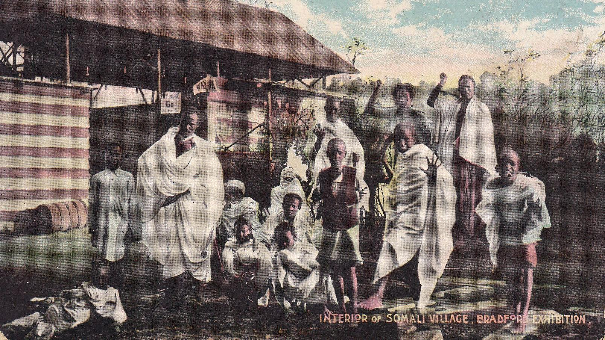
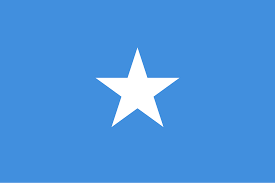

Somalia is a country in East Africa with a long and interesting history. In the past, Somali people traded with other countries across the sea and built strong communities. Over time, Somalia went through many changes, including colonization and independence. Today, Somalia is known for its culture, traditions, and hardworking people. This website will teach you about Somalia’s history and important events from the past.

